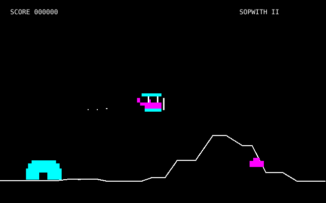

DAVID L. CLARKIN PELIN KUNNIAKSI
Sopwith Tribute
Sopwith II selaimessa ja sen rinnalla oma tribuuttiversio.
 OMA TRIBUUTTIVERSIO / 0.5
OMA TRIBUUTTIVERSIO / 0.5Rainbow Patrol
Oma arcade-käyttöliittymä, sulava vieritys ja tarkempi Amiga-henkinen grafiikka.

ALKUPERÄINEN CGASopwith II
Alkuperäiset grafiikat, PC-kaiutinäänet ja kaksi CGA-palettia. Pohjana SDL Sopwith 2.9.0.
Molemmat versiot ovat pelattavissa näppäimistöllä tai näyttöohjaimilla. Äänet ovat aluksi pois päältä. Tekniikka, tekijät ja lähdekoodi → · Ulkoasuvaihtoehdot A/B/C
Alkuperäinen peli: David L. Clark / BMB Compuscience.
Pelimoottori: SDL Sopwith 2.9.0, Simon Howard ja muut tekijät.